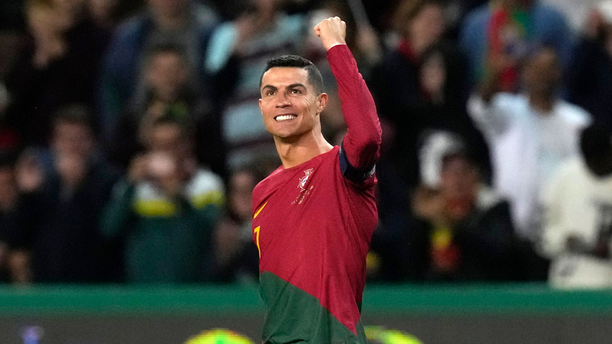
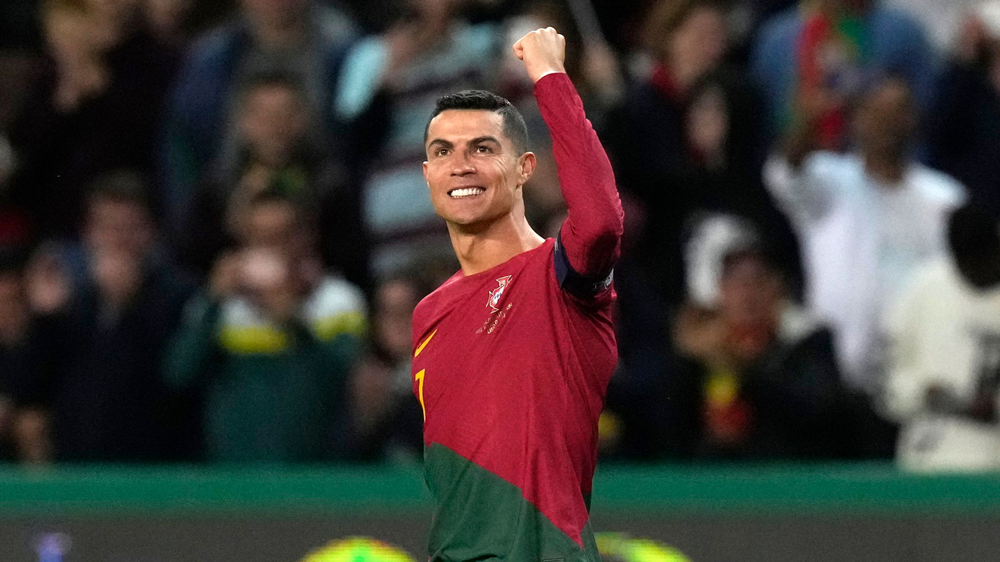
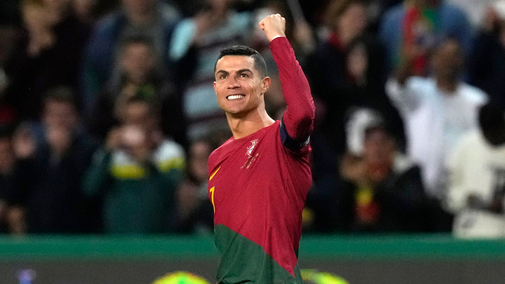

Cristiano Ronaldo is one of the greatest footballers in history. Known for his incredible athleticism, technical skills, and consistency, he has won numerous awards, including 5 Ballon d'Or titles. Throughout his career, he has played for top clubs such as Manchester United, Real Madrid, and Juventus, becoming a symbol of hard work and dedication. His incredible goal-scoring ability has earned him a place among the best players in football history.

📛 Full name: Cristiano Ronaldo
🂠Birthday: 05/02/1985 (Age: 40)
🇵🇹 Nationality: Portugal
📠Height: 1.87m
⚖️ Weight: 83kg
🯠Primary Position: Forward
⚽ Goals: 934
🤠Assist: 257
🮠Games: 1,263
🏟️ Current Club: Al Nassr
🦵 Score with the right foot: 599
🦵 Score with the left foot: 179
🧑‍🦱 Score with a header: 154
👟⚽ Penalty: 174
👟⚽ Free kick: 64
🛡️ Football club: Sporting CP, Manchester United, Real Madrid, Juventus, Al Nassr.